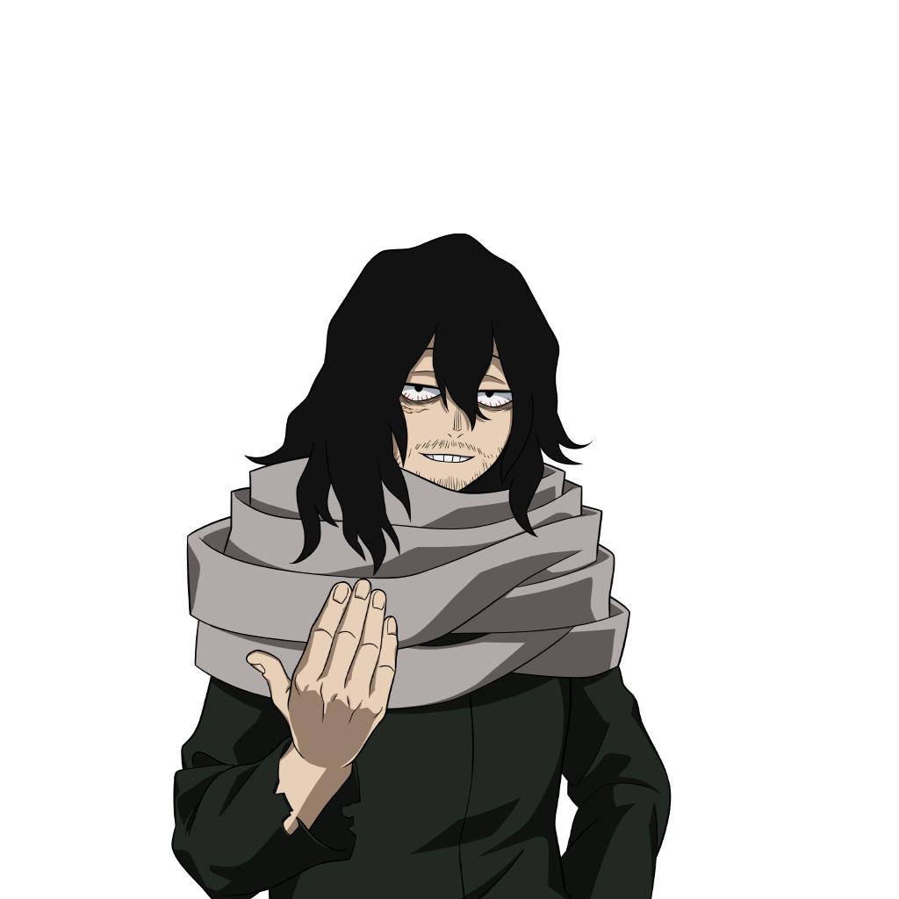

Su informacion principal
Nombre: Shota Aizawa
Quirk: Borrado
Su Quirk e da la capacidad de anular el Quirk y habilidades de los Quirks de sus objetivos simplemente con mirarlos.
Wiki con informacion mas detallada de AizawaSu Quirk e da la capacidad de anular el Quirk y habilidades de los Quirks de sus objetivos simplemente con mirarlos.
Wiki con informacion mas detallada de AizawaAtaque que atrapa y atrae a los enemigos utilizando unas cintas. Dale de nuevo para atraer hacia ti al enemigo atrapado.
Si la usas mientras esta en el aire, se acerca con una patada voladora hacia el lugar al que acertaste la cinta.
Arremete soltando sucesivas patadas voladoras en línea recta.
Ataque de rango con el que manipula innumerables cintas como si fueran látigos.
Suprime el Quirk de los enemigos que estes mirando.
Solo suprime sus habiliddades Alpha, Beta y Gamma. El enemigo podra seguir usando sus ataques basicos y su habilidad especial.
| Habilidad | Daño | Cargas |
|---|---|---|
| Alpha | 130 | 5 |
| Beta | 32(PerHit) | 2 |
| Gamma | 22(PerHit) | 100% |
| Especial | Supresion | 100% |